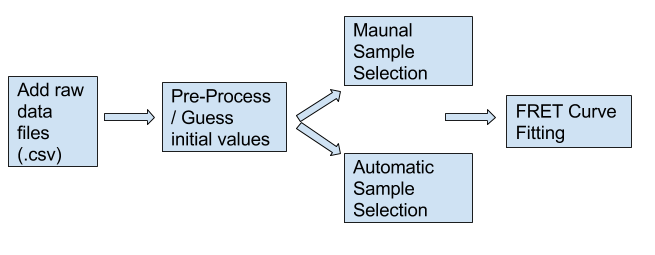
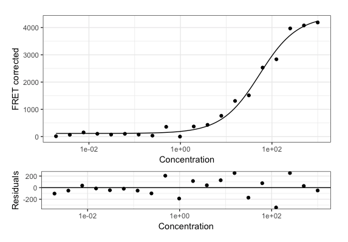

This package provides functions to analyze FRET binding data.
Given raw fluorescence data from a FRET titration experiment's donor,
acceptor and FRET channels, it allows to: (1) plot all channels to visually
inspect raw data; (2) correct FRET signal; (3) estimate parameters of the
quadratic binding equation (Kd, signal_min, signal_max); (4) fit the
quadratic binding equation to the data; (5) report Kd; and (6) plot the
corrected FRET and resulting binding curve.
Introduction
The rfret package allows the user to efficiently analyze fluorescence resonance energy transfer (FRET) binding data. FRET is a commonly used fluorescence binding assay to quantify protein-protein interactions. One challenge often encountered in analyzing FRET data is the amount of manual work. Although the assay can be automated using pipetting robots, the data analysis is often conducted manually in spreadsheets. The rfret package automates the analysis of FRET data, providing the user a faster end result as well as higher confidence by removing the manual data analysis step. Given raw fluorescence data, rfret will plot the donor, acceptor, and FRET channels. The data will then be corrected based on the donor bleed-through and acceptor direct excitation controls. Finally, the data will be fit to a binding model equation, which will allow the dissociation constant, Kd, to be determined.
Methods

The graphic above represents the functionality of this tool in 4 different stages.
1. The input of this tool expects the files to be in a specific file format (.csv) where all of the files are in one directory or all of the tests are in one continuous csv file. The proper formats for the csv files can be referenced in the manual.
2. Pre-Processing / Initial Values
a. Average Technical Replication Values
i. Take the average values of the technical replicates for more accurate binding data. This helps reduce individual sample noise, but doesn’t account for sample to sample variation.
b. Guess Initial Parameters
i. Calculate initial guesses for kd, fret_min, and fret_max. These are naive guesses based on observable values in the data but are close enough to the actual value to make the fit converge properly most of the time. If the fitting procedure fails, one can visually find a better approximation of kd by plotting the corrected FRET data as a function of the titration series. Alternatively, failure to fit the data can reveal data quality problems.
3. Choose whether you want to filter out some samples or not. We’ll see if we get this far.
4. Bind this buizness to a curve.
Results
Given raw fluorescence data from a FRET binding experiment, you can:
1. Plot all channels (donor, acceptor, FRET) to visually inspect raw data and find possible outliers;
2. Average fluorescence values of technical replicates of a same experiment (currently limited to two replicates);
3. Correct FRET signal by subtracting signal from a blank experiment;
4. Guess initial values for the parameters of the binding model equation (kd, fret_min, fret_max);
5. Fit a binding model equation to the data;
6. Report the value of Kd;
7. Plot the corrected FRET signal and the binding curve obtained by fitting the data.
Example Binding Curve

References
GitHub Page